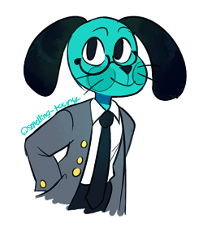
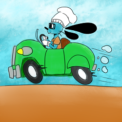
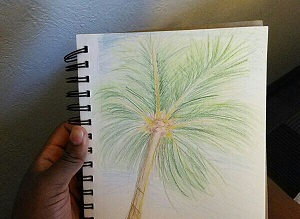

You could say I like art, a lot. If I'm not doing anything, there is a 90% chance that I'm drawing. I had the interest in drawing ever since I was 7. (7 year old me would be ecstatic to see how much I've grown!) But, there are some fields in art where my uncertainty will replace confidence. Like painting, or showing others my drawings or artwork.
I also have an interest in digital art. (You know, drawing on the computer.) I have a drawing tablet myself. Having it for 5 years, it will move into retirement when I get a new one. I grown an interest in this field by many speedpaints I watch on YouTube. Like Snow Body.
  I have too many careers I want to take in the field of digital and traditional art. I want to become an artist, but I also want to become a game designer and/or developer. I want to work for a majority of game companies like Nintendo, and Blizzard Entertainment, but especially these guys! (Because I love their games so much!) And also how cool would it be to have a game designed, scripted and coded by you and your team? Pretty cool, I would say so myself.
Going back to the idea that I want to become a game developer and designer: I spend the majority of my time playing video games! (Don't worry, I still mix in school, I'm not a flunky.) I have a few consoles, Xbox, WiiU, PC, and Nintendo 3DS. I even have a Nintendo 64 and an Atari! But... they're broken. On the flip side, they make great antique items! On those consoles I play Arkham Knight, Splatoon, Skyrim, Fallout 4, Stardew Valley, Overwatch, Animal Crossing New Leaf, Tomodachi Life, Pokemon Y, and Pokemon Alpha Sapphire. There's a lot more games from that list but I choose not to list them all!